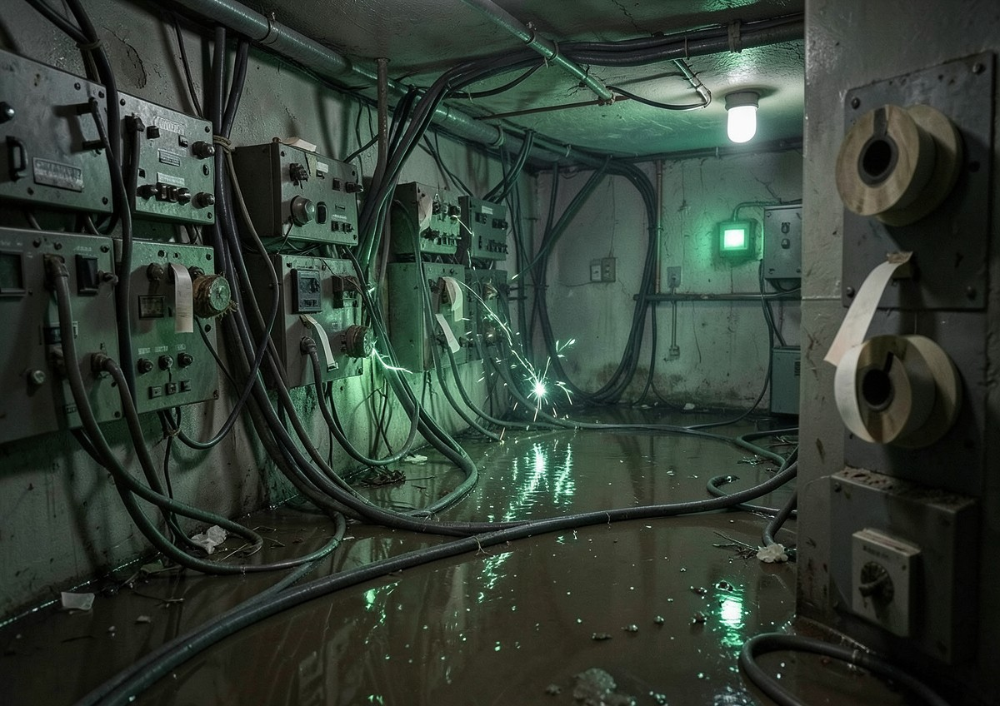

SCHRECKNET WIRE
The wire never sleeps. Intel, alerts, gossip, obituaries and ratlines — everything the rats have heard since the last burst uplink. Weight every item accordingly.
WIRE STATUS

SUBMIT TO THE WIRE
Items are submitted through your local custodian only — never through a live uplink. The wire desk reads everything, verifies what it can, and publishes what survives verification. If your item reads like the enemy wrote it, it goes to the burn pile.